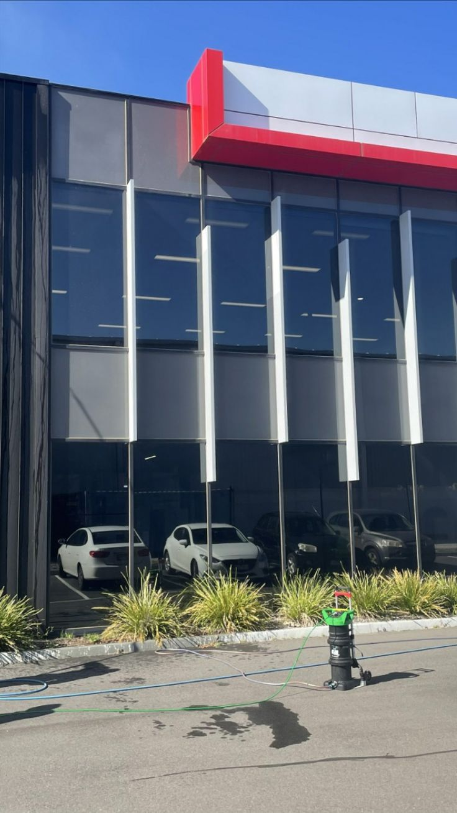
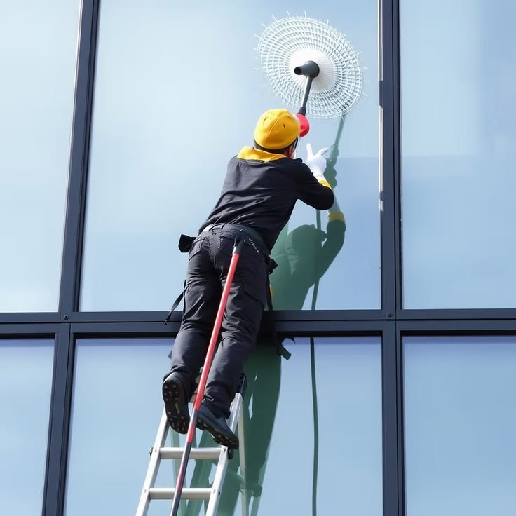
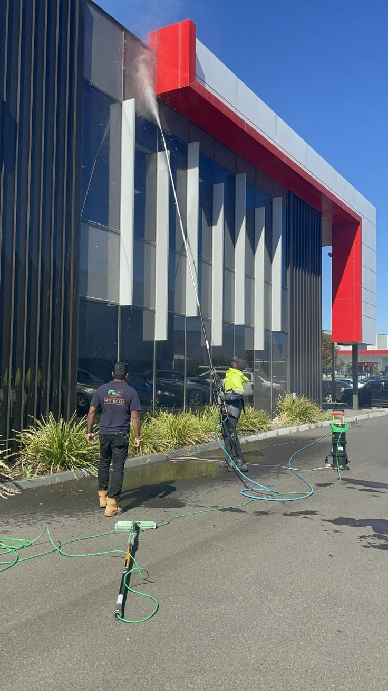

في عالم التجارة الحديثة أصبحت اللوحة الخارجية للمحل أو المول من أهم عناصر التسويق وجذب العملاء، حيث تكوّن الانطباع الأول لدى الزائر قبل دخوله إلى المتجر أو المنشأة التجارية. ولهذا يزداد البحث يومياً عن شركة تنظيف لوحات محلات بالرياض تساعد أصحاب المحلات على المحافظة على مظهر اللوحات الإعلانية والواجهات التجارية بأفضل صورة ممكنة.
ومع طبيعة الأجواء في مدينة الرياض وما تتعرض له اللوحات من أتربة وغبار وعوامل جوية مختلفة، فإن الحاجة إلى تنظيف لوحات محلات بالرياض بشكل دوري أصبحت أمراً ضرورياً للحفاظ على وضوح الهوية التجارية للمحل وجاذبية الواجهة الخارجية.
ومن هنا تقدم شركة حلول وتميز لخدمات التنظيف خدمات احترافية متخصصة في تنظيف لوحات المحلات والمولات واللوحات الإعلانية بمختلف أنواعها، باستخدام معدات حديثة ومواد آمنة تضمن أفضل النتائج.
كما توفر شركة حلول وتميز للتنظيف بالرياض حلولاً متكاملة تشمل تنظيف اللوحات المرتفعة ولوحات الكلادنج ولوحات الحروف البارزة ولوحات LED وواجهات المحلات التجارية.
ويعتمد فريق حلول وتميز للتنظيف على خبرة كبيرة في التعامل مع مختلف أنواع اللوحات التجارية داخل مدينة الرياض.

فريق حلول وتميز أثناء تنظيف واجهات المحلات التجارية الزجاجية بالرياض
لماذا تعتبر نظافة لوحة المحل عاملاً مهماً في جذب العملاء؟
قد ينفق صاحب المحل آلاف الريالات على الإعلانات والتسويق، لكن لوحة متسخة أو مغطاة بالغبار قد تؤثر بشكل مباشر على صورة النشاط التجاري.
ولهذا ينصح الخبراء بالاعتماد على شركة تنظيف لوحات محلات بالرياض بشكل دوري للحفاظ على المظهر الاحترافي للمحل.
ومن أبرز فوائد تنظيف لوحات محلات بالرياض:
تحسين الانطباع الأول
العميل يرى اللوحة قبل رؤية المنتجات أو الخدمات.
زيادة وضوح العلامة التجارية
تساعد النظافة على إبراز اسم المحل والشعار بشكل واضح.
جذب العملاء
الواجهة النظيفة أكثر جاذبية من الواجهة المتسخة.
المحافظة على عمر اللوحة
التنظيف المنتظم يقلل من تأثير الأتربة والعوامل الجوية.
ولهذا تعتمد الكثير من الأنشطة التجارية على شركة حلول وتميز لخدمات التنظيف للمحافظة على أفضل مظهر ممكن للواجهات واللوحات الإعلانية.
شركة تنظيف لوحات محلات بالرياض لجميع الأنشطة التجارية
سواء كنت تمتلك متجراً صغيراً أو معرضاً كبيراً أو سلسلة محلات تجارية، فإن شركة تنظيف لوحات محلات بالرياض توفر لك الحلول المناسبة.
وتشمل الخدمات:
- تنظيف لوحات المحلات التجارية
- تنظيف لوحات الكلادنج
- تنظيف الحروف البارزة
- تنظيف اللوحات المضيئة
- تنظيف لوحات LED
- إزالة الأتربة والبقع
كما توفر شركة حلول وتميز للتنظيف بالرياض برامج تنظيف دورية تناسب احتياجات مختلف الأنشطة التجارية.
أنواع اللوحات التي نتخصص في تنظيفها
لوحات الكلادنج
تنظيف بمواد مناسبة تحافظ على اللمعان دون تأثير على السطح
الحروف البارزة
تنظيف دقيق للحروف المعدنية والأكريليك والمضيئة
لوحات LED
تنظيف آمن للشاشات والهياكل الخارجية بأساليب متخصصة
اللوحات المضيئة
إزالة الأتربة وتحسين الرؤية الليلية للإعلانات
اللوحات المرتفعة
معدات خاصة للوصول الآمن للارتفاعات الكبيرة
واجهات المحلات
تنظيف زجاج وكلادنج وحجر للواجهات التجارية
تنظيف لوحات المحلات التجارية بالرياض وتأثيره على المبيعات
أثبتت التجارب التسويقية أن العميل ينجذب إلى المتاجر ذات المظهر المنظم والنظيف.
ولهذا فإن تنظيف لوحات المحلات التجارية بالرياض ليس مجرد خدمة تنظيف عادية، بل يعتبر جزءاً من استراتيجية التسويق البصري للمحل.
وتساعد خدمات تنظيف لوحات محلات بالرياض في:
- رفع جاذبية المحل
- زيادة وضوح الهوية التجارية
- تحسين تجربة العميل
- تعزيز ثقة الزوار


شركة تنظيف لوحات مولات بالرياض
تحتاج المولات والمراكز التجارية إلى مستوى عالٍ من العناية بسبب كثرة الزوار والمساحات الكبيرة.
ولهذا توفر شركة تنظيف لوحات مولات بالرياض خدمات متخصصة للمجمعات التجارية داخل الرياض.
وتشمل الخدمات:
- تنظيف لوحات المولات
- تنظيف اللوحات الإرشادية
- تنظيف اللوحات الخارجية
- تنظيف واجهات المراكز التجارية
- تنظيف الحروف البارزة
كما تعتمد شركة حلول وتميز للتنظيف بالرياض على معدات تساعد في الوصول إلى اللوحات المرتفعة بسهولة وأمان.
تنظيف لوحات مولات بالرياض للمراكز التجارية الكبرى
تعتمد المولات الحديثة على اللوحات الضخمة لجذب العملاء وتوجيههم داخل المنشأة. ولهذا فإن تنظيف لوحات مولات بالرياض يساعد على إبراز هذه اللوحات وتحسين مظهرها العام.
وتشمل فوائد الخدمة:
- إزالة الأتربة
- إزالة آثار الأمطار
- المحافظة على الألوان
- تحسين الرؤية الليلية للوحات المضيئة
شركة تنظيف لوحات إعلانية بالرياض
تمثل اللوحات الإعلانية عنصراً أساسياً في التسويق للأنشطة التجارية. ولهذا توفر شركة تنظيف لوحات إعلانية بالرياض خدمات احترافية لجميع أنواع اللوحات.
وتشمل:
- اللوحات الإعلانية الخارجية
- اللوحات التجارية
- اللوحات المضيئة
- لوحات الأبراج
- اللوحات المرتفعة
وتساعد خدمات تنظيف اللوحات الإعلانية بالرياض في المحافظة على وضوح الرسالة التسويقية وتحسين مظهر الإعلان.
تنظيف اللوحات الإعلانية بالرياض وأهميته للعلامات التجارية
عندما تكون اللوحة الإعلانية متسخة أو مغطاة بالغبار فإن ذلك يقلل من تأثيرها التسويقي. ولهذا تنصح شركة تنظيف لوحات إعلانية بالرياض بتنفيذ أعمال التنظيف بصورة دورية.
وتساعد خدمات تنظيف اللوحات الإعلانية بالرياض في:
- زيادة وضوح الإعلان
- جذب الانتباه
- تحسين صورة العلامة التجارية
- المحافظة على عمر اللوحة
متى تحتاج لوحة المحل إلى تنظيف؟
هناك علامات واضحة تدل على الحاجة إلى الاستعانة بشركة تنظيف لوحات محلات بالرياض ومنها:
- تراكم الغبار بشكل ملحوظ
- تغير لون اللوحة
- ضعف الإضاءة
- ظهور بقع أو آثار أمطار
- انخفاض وضوح الشعار
وعند ملاحظة هذه العلامات يُنصح بطلب خدمة تنظيف لوحات محلات بالرياض قبل أن تتفاقم المشكلة.
الفرق بين تنظيف اللوحات نهاراً وليلاً
توضح شركة حلول وتميز لخدمات التنظيف أن اختيار وقت التنظيف يعتمد على طبيعة النشاط التجاري.
التنظيف نهاراً
مناسب للمحلات التي تعمل مساءً.
التنظيف ليلاً
مناسب للمولات والمتاجر ذات الحركة المرتفعة خلال النهار.
وتوفر شركة حلول وتميز للتنظيف بالرياض مرونة كاملة في جدولة الأعمال بما يتناسب مع العميل.
لماذا يختار العملاء شركة حلول وتميز لخدمات التنظيف؟
خبرة واسعة — معدات حديثة — عمالة مدربة — أسعار مناسبة — سرعة تنفيذ — التزام بالمواعيد — ضمان على الخدمة — تغطية جميع أحياء الرياض.
تنظيف لوحات الكلادنج بالرياض باحترافية عالية
تعتبر لوحات الكلادنج من أكثر أنواع اللوحات انتشاراً في المحلات التجارية الحديثة، وذلك بفضل شكلها العصري وقدرتها على إبراز الهوية البصرية للنشاط التجاري. ومع مرور الوقت تتعرض هذه اللوحات للأتربة والغبار والعوامل الجوية المختلفة.
وتقدم شركة حلول وتميز لخدمات التنظيف خدمات متخصصة في تنظيف لوحات الكلادنج باستخدام معدات حديثة ومواد مناسبة لا تؤثر على سطح اللوحة.
وتساعد خدمات تنظيف لوحات محلات بالرياض على:
- إزالة الأتربة المتراكمة
- استعادة اللمعان
- المحافظة على الألوان
- تحسين وضوح اسم النشاط التجاري
شركة تنظيف لوحات محلات بالرياض للوحات الحروف البارزة
تتميز الحروف البارزة بأنها تمنح المحل مظهراً احترافياً وفخماً، لكنها تحتاج إلى عناية دورية للحفاظ على جاذبيتها. ولهذا توفر شركة تنظيف لوحات محلات بالرياض خدمات تنظيف الحروف البارزة بجميع أنواعها.
وتشمل الأعمال:
- إزالة الأتربة
- تنظيف الحروف المعدنية
- تنظيف الحروف الأكريليك
- تنظيف الحروف المضيئة
- إزالة البقع وآثار العوامل الجوية
شركة تنظيف لوحات مولات بالرياض للوحات LED الحديثة
أصبحت لوحات LED من أكثر الوسائل الإعلانية استخداماً في المولات والمتاجر الحديثة. ولهذا توفر شركة تنظيف لوحات مولات بالرياض خدمات متخصصة للعناية بهذه اللوحات.
وتشمل الخدمة:
- تنظيف الهيكل الخارجي
- إزالة الأتربة
- تنظيف الشاشات الخارجية
- المحافظة على وضوح العرض
شركة تنظيف واجهات محلات بالرياض
إلى جانب اللوحات الإعلانية تحتاج المحلات التجارية إلى العناية بالواجهات الخارجية. ولهذا تقدم شركة تنظيف واجهات محلات بالرياض خدمات متكاملة للمحلات التجارية في الرياض.
وتشمل:
- تنظيف الزجاج
- تنظيف الكلادنج
- تنظيف الحجر
- إزالة الأتربة
- إزالة البقع
تنظيف واجهات محلات بالرياض وأثره على جذب العملاء
تعتبر الواجهة الخارجية من أهم العناصر التي تؤثر على قرار العميل بالدخول إلى المحل. ولهذا فإن تنظيف واجهات محلات بالرياض يعد استثماراً مهماً في نجاح النشاط التجاري.
ومن أهم الفوائد:
- تحسين المظهر الخارجي
- رفع مستوى الثقة
- إبراز المنتجات والعروض
- تحسين تجربة العملاء
تنظيف واجهات المولات والمعارض التجارية
المولات والمعارض تحتاج إلى مستوى مرتفع من النظافة بسبب كثافة الحركة اليومية. ولهذا توفر شركة تنظيف واجهات محلات بالرياض خدمات مخصصة للمراكز التجارية.
وتشمل الخدمات:
- تنظيف الواجهات الزجاجية
- تنظيف الكلادنج
- تنظيف المداخل
- تنظيف اللوحات الخارجية
- إزالة البقع والأتربة
تنظيف واجهات محلات بالرياض للمطاعم والكافيهات
المطاعم والكافيهات تعتمد بشكل كبير على المظهر الخارجي لجذب العملاء. ولهذا أصبح تنظيف واجهات محلات بالرياض من الخدمات المهمة لهذه الأنشطة.
وتساعد الخدمة في:
- تحسين المظهر العام
- إبراز اسم النشاط التجاري
- جذب العملاء
- المحافظة على الواجهة
أسعار تنظيف لوحات المحلات بالرياض
| الخدمة | السعر التقريبي |
|---|---|
| تنظيف لوحة محل صغيرة | 150 ريال |
| تنظيف لوحة محل متوسطة | 250 ريال |
| تنظيف لوحة محل كبيرة | 400 ريال |
| تنظيف لوحة كلادنج | 350 ريال |
| تنظيف حروف بارزة | 300 ريال |
| تنظيف لوحة LED | 350 ريال |
| تنظيف واجهة محل | 400 ريال |
أسعار تنظيف لوحات المولات بالرياض
| الخدمة | السعر التقريبي |
|---|---|
| تنظيف لوحة مول صغيرة | 700 ريال |
| تنظيف لوحة مول متوسطة | 1200 ريال |
| تنظيف لوحة مول كبيرة | 2500 ريال |
| تنظيف لوحات إرشادية | حسب العدد |
| عقد صيانة شهري | حسب الاتفاق |
جدول أسعار تنظيف لوحات المحلات بالرياض
| الخدمة | السعر التقريبي |
|---|---|
| تنظيف لوحة محل صغيرة | 150 ريال |
| تنظيف لوحة محل متوسطة | 250 ريال |
| تنظيف لوحة محل كبيرة | 400 ريال |
| تنظيف لوحة كلادنج | 350 ريال |
| تنظيف لوحة حروف بارزة | 300 ريال |
| تنظيف لوحة LED | 350 ريال |
| تنظيف لوحة إعلانية خارجية | 500 ريال |
| تنظيف واجهة محل | 400 ريال |
وتوضح شركة حلول وتميز للتنظيف بالرياض أن السعر النهائي يحدد بعد المعاينة الميدانية المجانية.
أسعار تنظيف لوحات المولات بالرياض
| الخدمة | السعر التقريبي |
|---|---|
| تنظيف لوحة مول صغيرة | 700 ريال |
| تنظيف لوحة مول متوسطة | 1200 ريال |
| تنظيف لوحة مول كبيرة | 2500 ريال |
| تنظيف لوحات إرشادية | حسب العدد |
| تنظيف لوحات خارجية كبيرة | حسب المساحة |
| عقد صيانة دوري | حسب الاتفاق |
عقود الصيانة الدورية للمحلات والمولات
يعتبر التنظيف الدوري من أفضل الحلول للحفاظ على اللوحات والواجهات بحالة ممتازة طوال العام. ولهذا توفر شركة تنظيف لوحات محلات بالرياض عقود صيانة مرنة تناسب مختلف الأنشطة التجارية.
العقد الشهري
مناسب للمحلات ذات الحركة اليومية المرتفعة
العقد ربع السنوي
مناسب للمعارض والمتاجر المتوسطة
العقد نصف السنوي
مناسب للأنشطة التي تحتاج إلى متابعة دورية أقل
العقد السنوي
خيار اقتصادي للمولات والمنشآت التجارية الكبيرة
أخطاء شائعة تؤدي إلى تلف اللوحات الإعلانية
تحذر شركة حلول وتميز لخدمات التنظيف من مجموعة من الأخطاء التي يرتكبها البعض عند تنظيف اللوحات:
استخدام مواد كيميائية قوية
قد تؤدي إلى تلف الألوان أو الهيكل الخارجي.
استخدام أدوات خشنة
قد تسبب خدوشاً في اللوحات أو الحروف البارزة.
إهمال التنظيف الدوري
يسمح بتراكم الأتربة ويجعل عملية التنظيف أكثر صعوبة.
الاعتماد على عمالة غير متخصصة
قد يؤدي إلى نتائج غير مرضية أو أضرار في اللوحة.
لماذا يفضل أصحاب المحلات التعاقد الدوري؟
يساعد التعاقد الدوري مع شركة تنظيف لوحات محلات بالرياض على المحافظة على مستوى ثابت من النظافة.
ومن أهم المزايا:
- تقليل التكاليف
- المحافظة على المظهر
- تحسين التسويق البصري
- زيادة عمر اللوحات
تنظيف اللوحات المرتفعة بالرياض بأحدث المعدات
تحتاج اللوحات المرتفعة إلى معدات خاصة وخبرة عملية لضمان تنفيذ أعمال التنظيف بأمان وكفاءة. ولهذا يعتمد الكثير من أصحاب الأنشطة التجارية على شركة تنظيف لوحات محلات بالرياض عند الحاجة إلى تنظيف اللوحات الموجودة على المباني المرتفعة أو الأبراج التجارية.
وتوفر شركة حلول وتميز لخدمات التنظيف فرق عمل مدربة ومجهزة للتعامل مع مختلف الارتفاعات وأنواع اللوحات.
وتشمل الخدمة:
- تنظيف اللوحات المرتفعة
- إزالة الأتربة والغبار
- تنظيف اللوحات المضيئة
- تنظيف الهياكل الخارجية
- تلميع الأسطح الظاهرة
الضمان المقدم من شركة حلول وتميز لخدمات التنظيف
عند التعاقد مع شركة حلول وتميز لخدمات التنظيف لا يحصل العميل على خدمة تنظيف فقط، بل يحصل على التزام حقيقي بالجودة والمتابعة. ولهذا تحرص الشركة على تقديم ضمان على جودة التنفيذ بما يمنح أصحاب المحلات والمولات راحة وثقة أكبر.
ويشمل الضمان:
- متابعة مستوى الجودة بعد الانتهاء من العمل
- مراجعة الخدمة عند الحاجة
- معالجة الملاحظات المرتبطة بالتنفيذ
- الحرص على تحقيق رضا العميل
- الالتزام بالمعايير المهنية المتفق عليها
لماذا تعتبر اللوحة النظيفة استثماراً وليس تكلفة؟
الكثير من أصحاب الأنشطة التجارية ينظرون إلى التنظيف على أنه مصروف إضافي، بينما الحقيقة أن اللوحة النظيفة تساعد على جذب مزيد من العملاء وتحسين صورة النشاط التجاري.
ولهذا فإن الاعتماد على شركة تنظيف لوحات محلات بالرياض بشكل دوري يمكن أن ينعكس إيجابياً على النشاط التجاري. كما أن خدمات تنظيف اللوحات الإعلانية بالرياض وتنظيف واجهات محلات بالرياض تساعد على تعزيز الحضور البصري للمحل أو المول أمام المنافسين.
تغطية جميع أحياء الرياض
شمال الرياض
شرق الرياض
غرب وجنوب الرياض
الأسئلة الشائعة
ما أفضل شركة تنظيف لوحات محلات بالرياض؟
يعتمد الاختيار على الخبرة وجودة التنفيذ والضمان، وتعتبر شركة حلول وتميز لخدمات التنظيف من الشركات المتخصصة في هذا المجال داخل الرياض.
هل يمكن تنظيف اللوحات المرتفعة؟
نعم، تمتلك الشركة المعدات المناسبة للوصول إلى اللوحات المرتفعة وتنفيذ أعمال التنظيف بأمان.
هل تشمل الخدمة تنظيف لوحات LED؟
نعم، توفر شركة تنظيف لوحات محلات بالرياض خدمات تنظيف لوحات LED والشاشات الإعلانية الحديثة.
هل تقدمون خدمة تنظيف لوحات المولات؟
نعم، تقدم شركة تنظيف لوحات مولات بالرياض خدمات متخصصة للمولات والمراكز التجارية.
هل تشمل الخدمة تنظيف الواجهات؟
نعم، توفر شركة تنظيف واجهات محلات بالرياض خدمات تنظيف الواجهات التجارية والزجاج والكلادنج.
هل يوجد ضمان على الخدمة؟
نعم، تقدم شركة حلول وتميز للتنظيف بالرياض ضماناً على جودة التنفيذ.
هل يمكن الحصول على عقد صيانة سنوي؟
نعم، توفر الشركة عقوداً شهرية وربع سنوية ونصف سنوية وسنوية.
هل تعملون في جميع أحياء الرياض؟
نعم، تغطي الخدمات جميع أحياء ومناطق الرياض.
كم تستغرق عملية تنظيف اللوحات؟
يعتمد ذلك على حجم اللوحة ونوعها وعدد اللوحات المطلوبة.
هل يتم توفير المعدات ومواد التنظيف؟
نعم، تقوم شركة حلول وتميز لخدمات التنظيف بتوفير جميع المعدات والمواد اللازمة لتنفيذ الخدمة.
الخاتمة
إذا كنت تبحث عن شركة تنظيف لوحات محلات بالرياض تمتلك الخبرة والمعدات والقدرة على تقديم نتائج احترافية، فإن شركة حلول وتميز لخدمات التنظيف توفر لك حلولاً متكاملة تناسب مختلف أنواع المحلات والمنشآت التجارية.
كما تقدم شركة تنظيف لوحات مولات بالرياض خدمات متخصصة للمولات والمراكز التجارية التي تحتاج إلى مستوى عالٍ من العناية والنظافة للحفاظ على صورتها الاحترافية أمام الزوار.
وإذا كنت بحاجة إلى شركة تنظيف لوحات إعلانية بالرياض أو ترغب في تنفيذ تنظيف اللوحات الإعلانية بالرياض بصورة احترافية، فإن فريق شركة حلول وتميز للتنظيف بالرياض جاهز لتقديم الخدمة وفق أعلى معايير الجودة.
وتشمل الخدمات كذلك شركة تنظيف واجهات محلات بالرياض وعمليات تنظيف واجهات محلات بالرياض للحفاظ على المظهر الخارجي الكامل للنشاط التجاري.